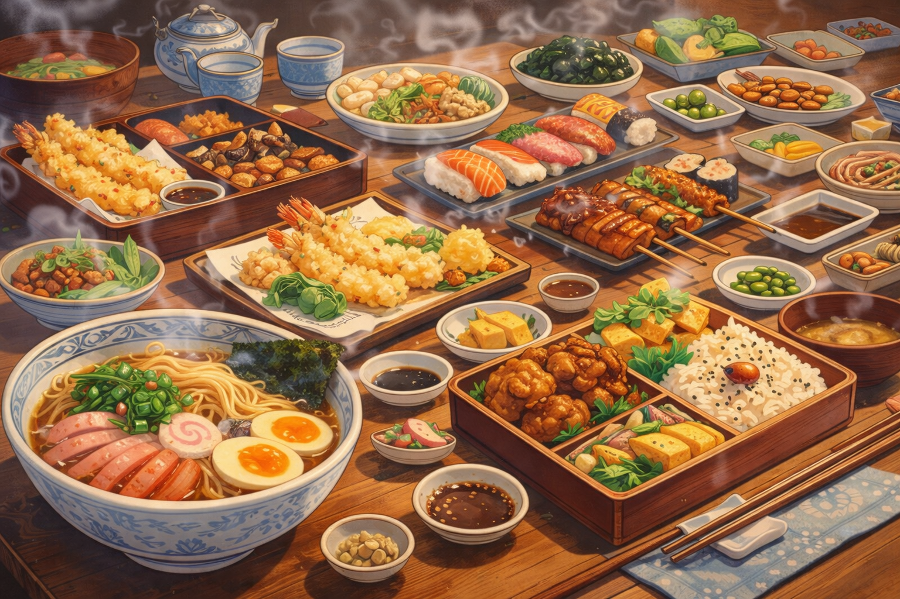

Japanese cuisine prizes seasonality, balance and “umami” — that savory depth discovered in 1908 — and is built around simple but precise techniques (think dashi, pickles, rice). Washoku, the traditional dietary culture that celebrates these values, is even recognized by UNESCO. Expect everything from delicate sushi and tempura to comforting ramen and busy bento boxes — all with regional twists and serious snack-game.
Japanese food (washoku) centers on seasonality, visual harmony, and layered savory flavors built from stocks like dashi and fermented staples such as miso and soy — the culinary philosophy is to highlight ingredients, not hide them. This approach was formalized and celebrated internationally when “washoku” was inscribed on UNESCO's Intangible Cultural Heritage list, reflecting the culture's respect for nature, ritual meals (New Year feasts, seasonal plates), and sustainable practices. Also, don't underestimate umami: Dr. Kikunae Ikeda isolated glutamate as the compound behind that deeply satisfying savory taste in 1908, which helped people explain why a bowl of ramen or a scoop of miso can feel so gratifying.
When it comes to famous dishes, sushi (modern nigirizushi popularized in Edo) shows how quick, urban food can become national iconography; ramen, by contrast, is a Japanese riff on Chinese wheat-noodle soups that prospered in port cities and later exploded into regional styles (Sapporo miso, Hakata tonkotsu, etc.). Tempura is a neat bit of culinary globalization — frying techniques and battered veggies arrived via 16th-century Portuguese contacts and were deftly refined into a uniquely Japanese art. Add bento (modular boxed meals), yakitori, udon/ soba, takoyaki and countless local specialities, and you've got a cuisine that's at once meticulously traditional and constantly playful.
Sushi

Nigiri

Maki

Gunkan

Inari
Ramen

Shoyu

Miso

Shio

Tonkotsu

Tsukemen

Hiyashi chūka
Donburi (Rice Bowls)

Gyudon

Katsudon

Oyakodon

Tendon

Unadon

Kaisendon